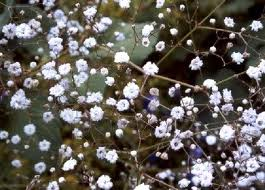

Gypsophile

Gypsophile (Gypsophila paniculata de la famille des Toute la plante)
Toxique pour le Korat.
Partie toxique pour les chats en général et le Korat en particulier :
Saponine.
Symptômes du processus pathologique :
irritation de la peau, irritation des voies respiratoires, asthme, étouffement.